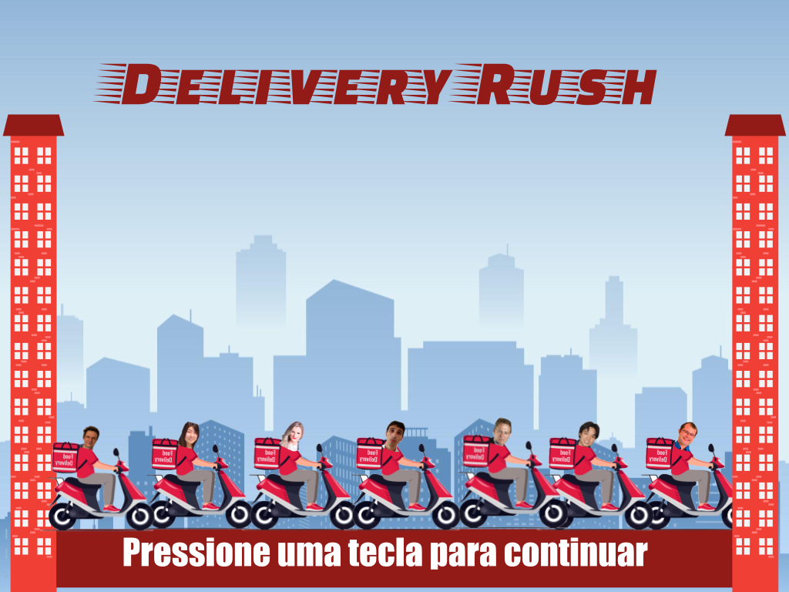
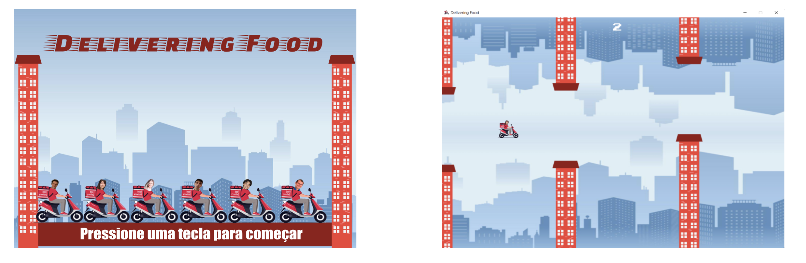
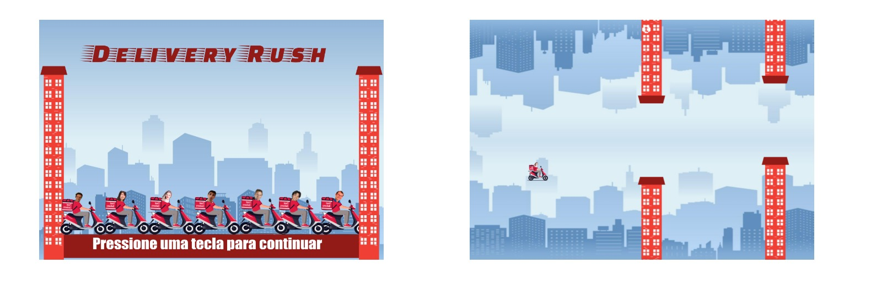
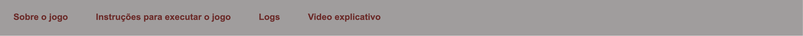
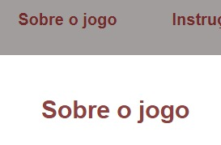
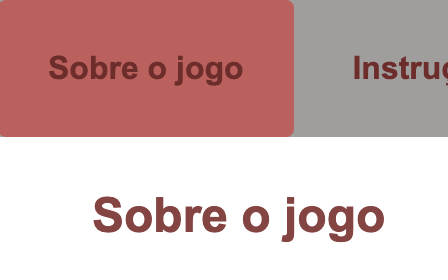
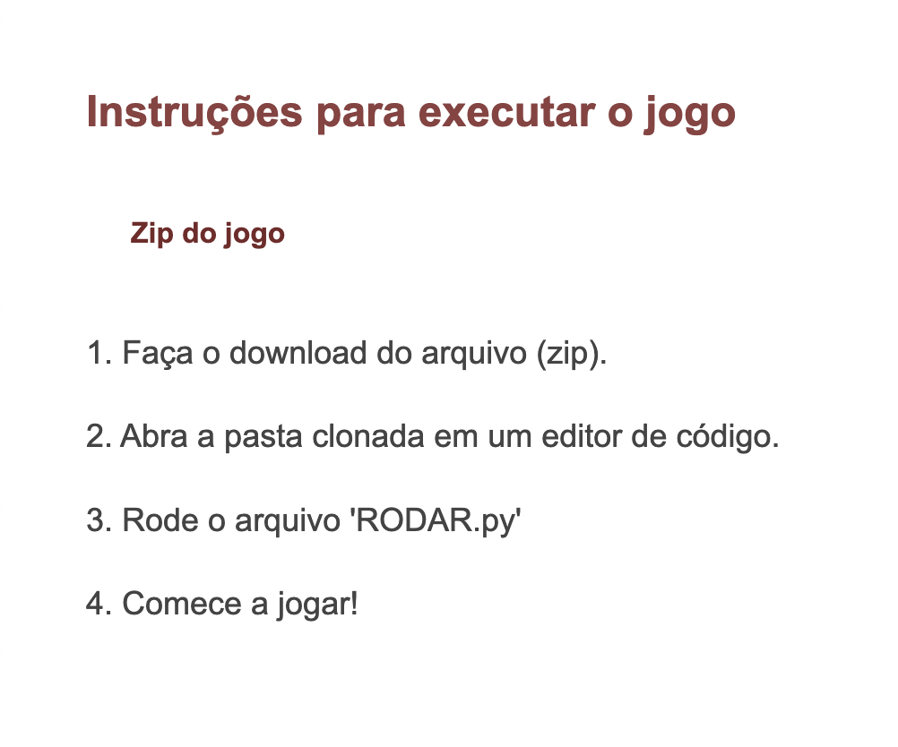
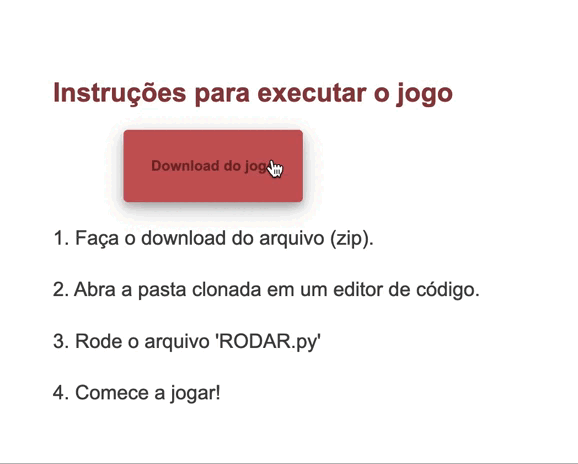
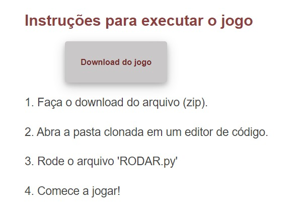

Sobre o jogo
Grupo: Eduarda Paiva Domingues e Eduardo Schneider Monteiro de Barros
O Delivering Food se passa em um universo paralelo em que o Insper faliu.
Por conta disso, diversos professores perderam seus empregos e agora terão que ganhar a vida
fazendo delivery. Para isso o jogador terá que controlar os professores de ciências da computação
para ajudá-los a desviar pelos prédios e entregar os pedidos. A gameplay acontece por meio de pulos
do personagem que acontecem conforme o usuário aperta o mouse, com o objetivo de desviar dos prédios.

Instruções para executar o jogo
1. Faça o download do arquivo (zip).
2. Abra a pasta clonada em um editor de código.
3. Rode o arquivo 'RODAR.py'
4. Comece a jogar!
Como Jogar
1. Clique em qualquer tecla;
2. Selecione o professor que deseja jogar;
3. Quando estiver preparado, de o primeiro clique com o mouse;
4. Mantenha o professor voando, e sem bater nos prédios ou nas extremidades;
5. A cada obstaculo você acumula 1 ponto;
6. Ao bater nos prédios, ou nas extremidades você perde a jogada, mas pode iniciar uma nova patida;
7. Boa sorte!
Logs
Eduarda:
14/04/2022: Decidimos os conceitos básicos do jogo, já fiz todos os 6 personagens que serão opções na hora do jogo, e já estão como PNG.
25/04/2022: Site pronto com o básico, tela de começo, tela final final, prédio, prints adicionadas ao site. Tudo transferido para o Github.
26/04/2022: Desenvolvimento do jogo.
27/04/2022: Caminhos finais para finalização do jogo.
02/05/2022: Começo da escolha dos professores.
04/05/2022: Video adicionado ao site, algumas heurísticas feitas.
Eduardo:
25/04/2022: Começo do pygame, mecânicas básicas do jogo.
26/04/2022: Desenvolvimento do jogo.
27/04/2022: Reta final para finalização do jogo.
02/05/2022: Finalização da tela de seleção de personagens
03/05/2022: Finalização.
Avaliação Heurística
1. Problema: Heuristica 04, Padrão interno do site, duas fotos com diferenças, se analisar bem o topo das imagens diferem. A da direita contando com um cabeçalho branco a outra não.

Solução: foi removido a parte branca em cima da imagem

2. Problema: Heurisitca 4, os botões se encontram mal espalhados pelo cabeçalho

Solução: espalhamos os botões pelo cabeçalho
3. Problema: C.R.A.P. contraste, não há contaste entre os botões e seus respectivos titulos

Solução: foi feito um contorno em volta dos botões com o intuito de destacar e diferenciar eles de seus respectivos caminhos

4. Problema: Heuristica 01, Forneça feedback de cada ação do usuário na interface. Não há um feedback ao passar o mouse por cima de botões usáveis.

Solução: Foi adicionado uma mudança de cor no botão ao passar o mouse por cima

5. Problema: C.R.A.P. alinhamento, não um alinhamento do botão zip com o texto
Solução: Mudamos o botão de dowload e alinhamo ele ao texto
